Transform the Vanguard Year in Review into an adaptive and interactive financial experience that adjusts to each user's needs, compares progress over time, explores future possibilities, and remains accessible to revisit and understand.
Role
UX Researcher
& Designer
Client
Vanguard
× UNC Hussman
Team
Sanjana Nukala
Nora Lyons
Bettina George
Francesca Fabiano-Grossi
Ben Eggleston
Timeline
Jan – May 2026
MEJO 581
Tools
Figma
Card Sorting
Think-Aloud Testing
01 / The Challenge
Vangaurd wanted a redesign for their "Year in Review" feature as clients often underutilize it due to misunderstanding and lack of clarity regarding its benefits and specific features. The redesign targets retirees and those aged 50+ approaching retirement. This group represents a wide spectrum of financial literacy and comfort with technology.
The goal of this redesign is to show retirees exactly how Digital Advisor helps them, making the "Year in Review" more personal and easy to understand. By focusing on what retirees care about most, the redesign aims to turn confusion into confidence, encouraging them to use the feature to stay engaged and take clear steps toward their financial goals.
02a / Research
Before designing anything, we needed to understand how our users actually think about their finances and use the website. We ran listening sessions over zoom with investors 50+ to hear about their priorities, their relationship with financial tools, and what it means to feel "on track." Then we used moderated usability tests to have them test Vanguard's existing prototype.
Participant profiles
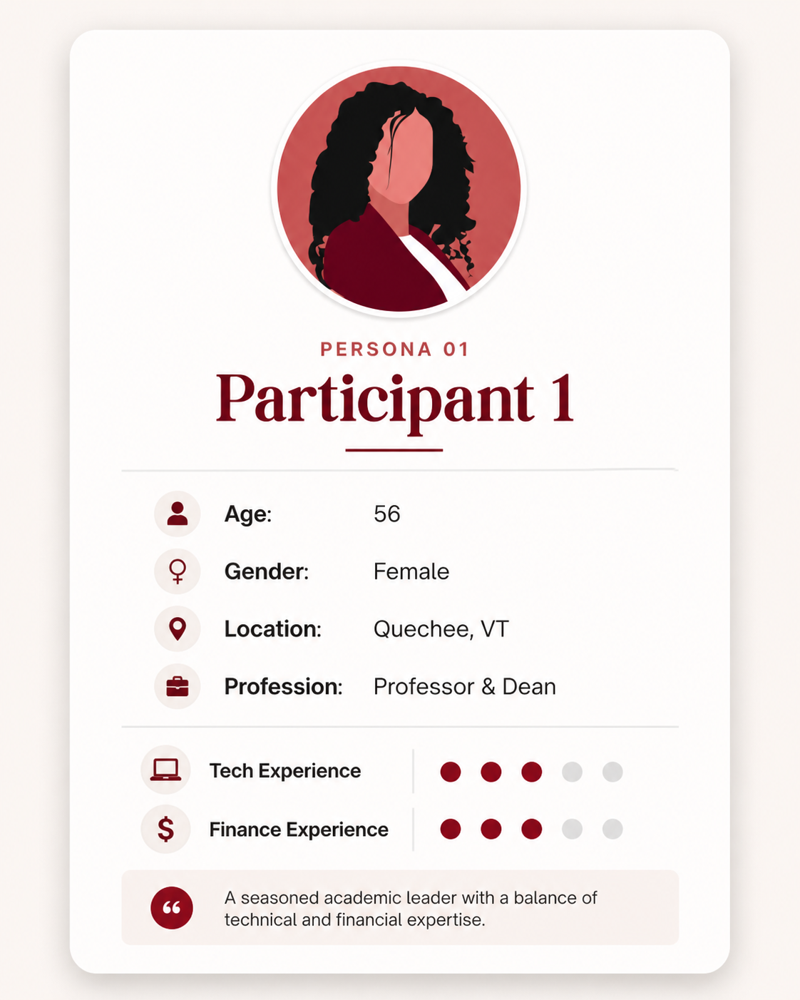
P1
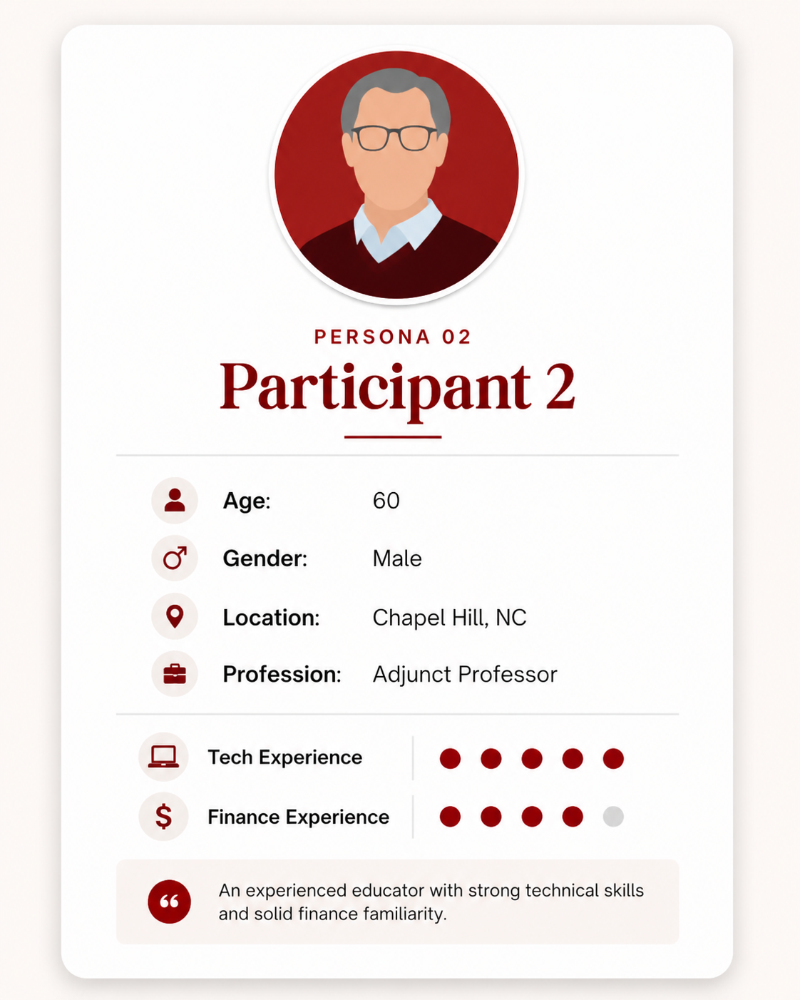
P2
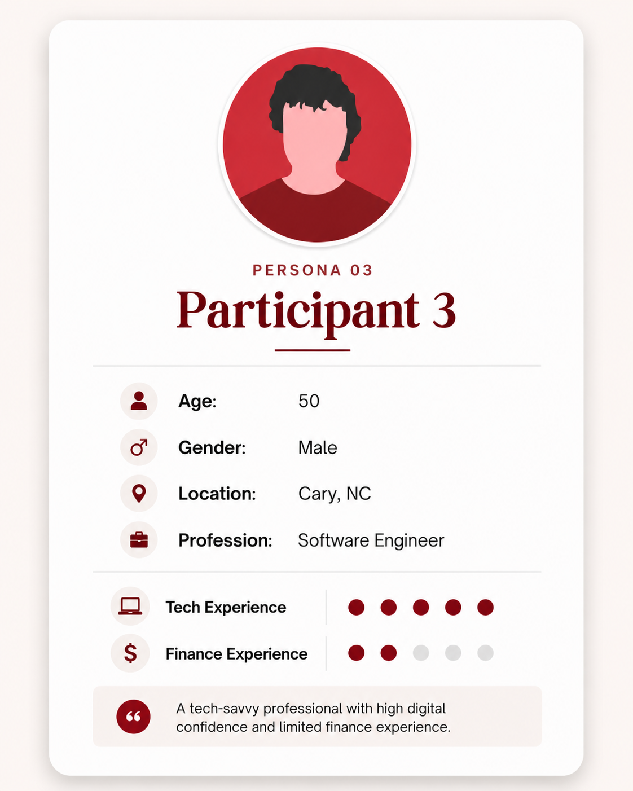
P3
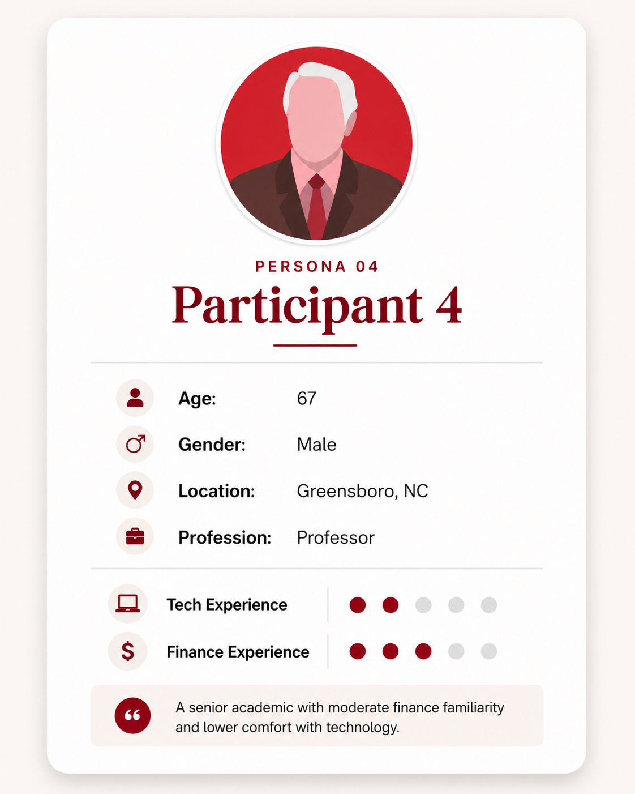
P4
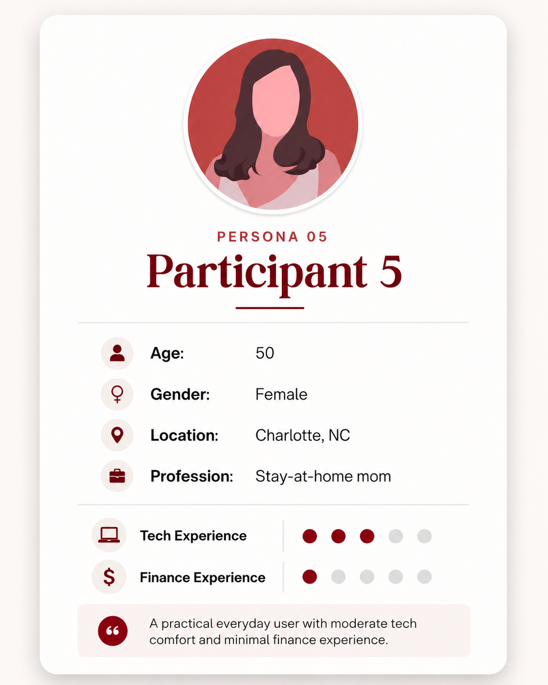
P5
02b / Research
What users liked
"If you had to do it, that would be annoying. They have it like this, that's the way to do it."
Participant on the optional nature of the Year in ReviewProblem findings — by severity
The Year in Review expired on 02/11. Users couldn't return to it after the expiration date — critical, since many use it for tax season.
"People will need to use the YIR for tax season."
Feature buried on homepage — required scrolling to find.
"I would have liked it if along the top there was a thing that said Year in Review."
No back button after navigating to Next Steps — users were frustrated.
No monthly breakdown — only start-of-year to end-of-year data.
Financial insights too vague to act on — unclear retirement progress.
External accounts not visible; managed-account links went nowhere.
Financial explanations felt redundant for near-retirement users.
"That's not my problem, they're the experts."
Dismiss/action button positions reversed and inconsistent. Progress dots not interactive — tedious to navigate backwards.
Inconsistent color palette across graphics.
"If I have to scroll down to look at it, I would ignore it."
Participant on feature discoverability02c / Research
We organized our usability findings into scales and mapped participants across them to identify distinct user types and design needs. We made scales that defined how often they check their accounts, trust in automation, preference for detail vs. simplicity, comfort with technology, level of financial education, and emotional confidence.
From this we identified four distinct user types, and they confirmed our findings that: one size does not fit all. Each user type had different needs and preferences, and we had to design an experience that could adapt to them to meet these competing needs.
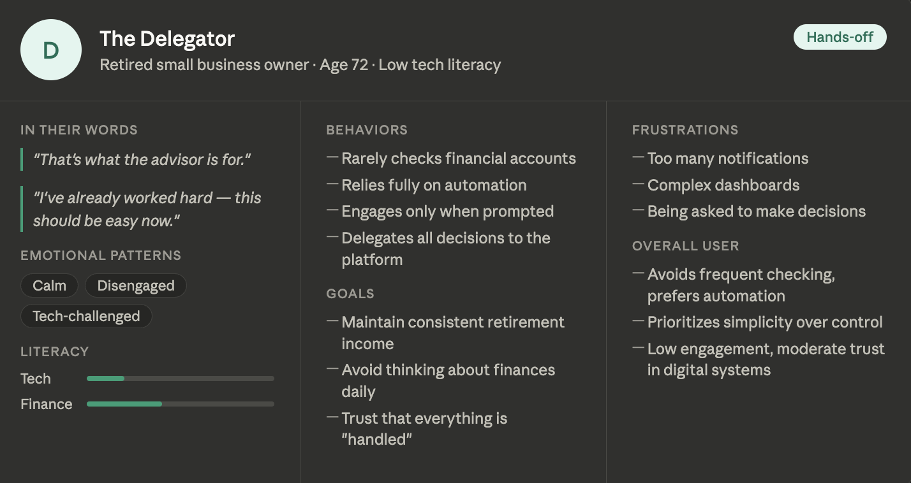
Low-tech, hands-off retiree who values simplicity and trust. Prefers financial tools that make decisions for them so they can focus on enjoying retirement.
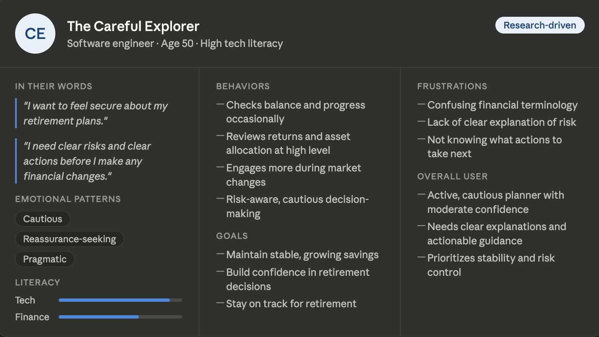
Highly comfortable with technology and moderately financially literate. Actively monitors finances but wants clear explanations and reassurance before making important retirement decisions.
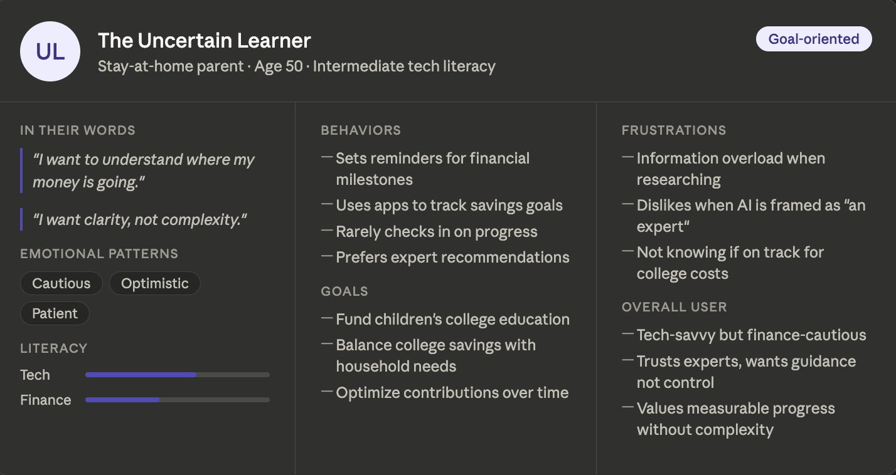
Cautious but motivated planner. Wants simple, trustworthy guidance without feeling overwhelmed by complex financial information.
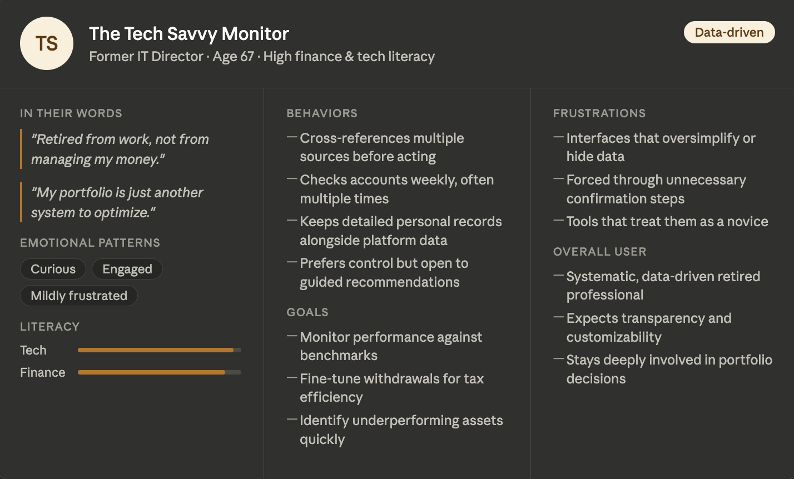
Highly tech-savvy and financially sophisticated. Wants detailed data, advanced tools, and full control — no oversimplified explanations.
Key problems we identified through our research
Users nearing or in retirement want to see annual financial trends to track their investments over time to identify any patterns or insights over the years.
Users with different financial backgrounds had very different reactions to the same content and graphics. One experience was trying to serve everyone and ending up serving no one fully.
Users across different age demographics and backgrounds lacked features that could make the experience more accessible. Many were frustrated with each page’s layout and preferred the website where they could choose what to look at.
03a / Structure & Thinking
As we moved into design, we used the card sort method to to group the different features and the way users interacted with them. Rather than diving straight into the structure we used the card sort to organize the sequence. We noticed a general structure that seemed to resonate: start with familiar, reassuring information (overall account health), then layer in complexity (projections, comparisons, simulators) only after users feel grounded in their data.
03b / Structure & Thinking
Based on this idea we experimented with 2 flows. Flow 1 centers on the Guided/Self-Directed toggle. Flow 2 leads with animation and theme customization. However, both share the same preferred path through the core content.
03c / Structure & Thinking
Decision 1
Guided vs. Self-Directed mode selection before any content loads.
Digital and financial literacy vary enormously in the 50+ audience. A single toggle at entry serves both groups without requiring two separate structures."This allows the sequence to stay the same, regardless of the type of user, and maintains a predictable path.
Decision 2
The simulator appears on the Contributions page and Retirement Goal page — not at the start.
I argued for this placement specifically because users need to feel comfortable with the numbers and insights before experimenting with hypotheticals. Placing it earlier creates decision anxiety. When users are already looking at their contributions and start wondering "what-if," they are more likely to naturally engage with this feature. This is directly traceable to my card sort sequence.
04 / Design Process
Our team ran a design thinking session over Zoom, moving from illogical ideas → original ideas → refined ideas using "Yes AND" buildouts to develop each concept. My contributions that made it into the final design:
Original ideas (left) refined through "Yes AND" buildouts into actionable features (right).
Before touching Figma's visual layer, we built a full content specification — 11 screens, each with defined content, new features, data visualization types, button actions, and UI elements. This helped connect our research findings and the prototype: specifying what every screen needed to accomplish before designing how it would look.
The design progressed through three phases, each building on the last, with research guiding every structural choice.
"Mapping every branch, decision point, and preferred path."
"Defining content, hierarchy, and interaction for each screen before styling."
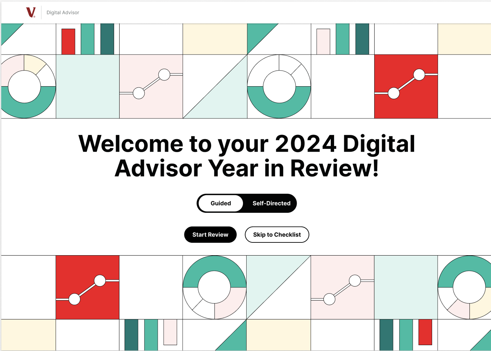
"The final prototype, built within Vanguard's visual system."
05 / The Final Design
Prototype Walkthroughs
Beginner Mode
Guided experience — simplified explanations and a curated path through the review
Advanced Mode
Self-directed experience — full data access, detailed charts, and advanced features
To account for varying financial literacy, we added a Guided vs. Self-Directed toggle at the start of the Year in Review. This gives users immediate control: "Guided Mode" simplifies language and visuals for casual investors, while "Self-Directed Mode" provides the deep analytics advanced users expect. This manual choice ensures accuracy and personalization without extra steps needed from something like a survey.
The original YIR was a static scroll. Our redesign replaced this passive experience with interaction: subtle animations draw attention to key data, milestone pop-ups celebrate achievements, and every graphic is tappable for deeper detail. The optional voiceover feature, one of my original suggestions, builds on our research that some retirees struggle with dense on-screen text. This adds a layer of accessibility without cluttering the experience. Larger fonts and high-contrast illustrations also support readability throughout.
One of our major usability findings was that users wanted to see progress over time, not just a brief overview of the current year. Our redesign adds "You vs. You Last Year" comparisons, and a dedicated archive of past Year in Reviews organized by year. For users closer to retirement, an optional Quarter in Review provides even more detail as their financial progress becomes more important.
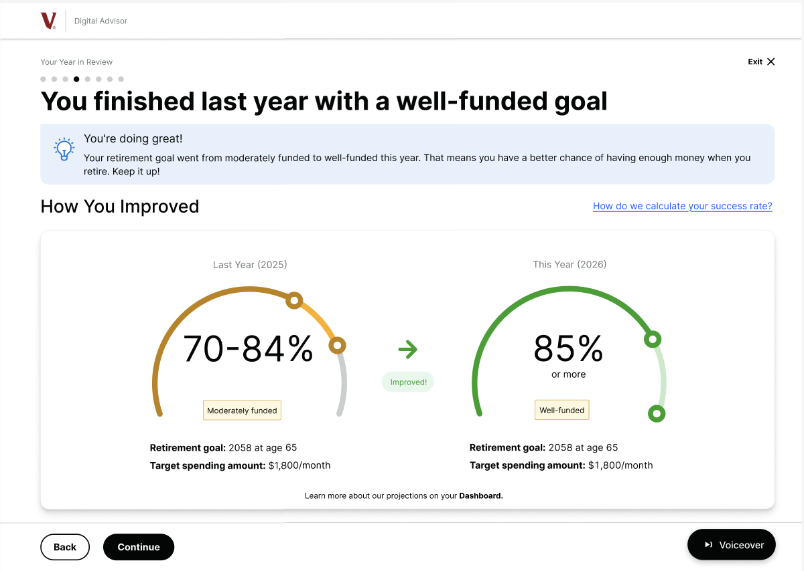
The what-if simulator and its placement was one of my original ideas. It appears on the Contributions page and the Retirement Goal page: the exact moments when users are already engaged with their own data and naturally start asking "what if I changed something?" The inputs on this overlay let users adress immediate concerns and allow of actionable insights.
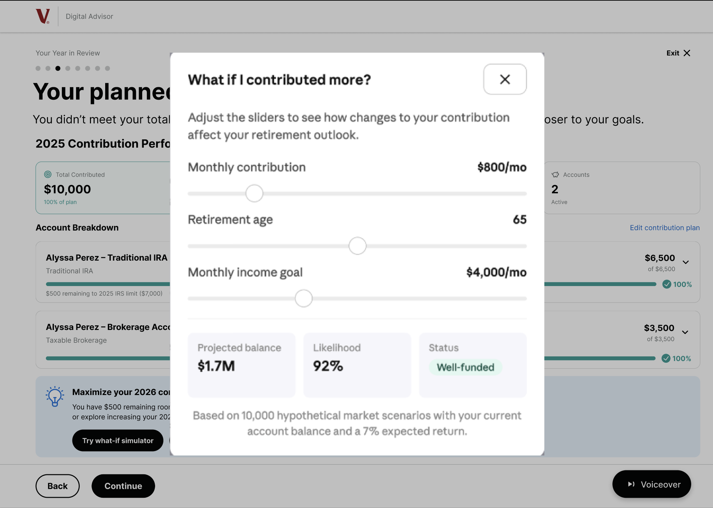
The YIR expiration was the single most catastrophic problem we found. Users couldn't return to it after 02/11, even when they needed it for tax season. The PDF export directly solves this by letting users keep their reviews for later use. The archive lets users revisit any past Year in Review on demand. For the segment of the 50+ audience that prefers a tangible document over an app experience, this is the feature that makes the whole redesign actually useful in the long run.
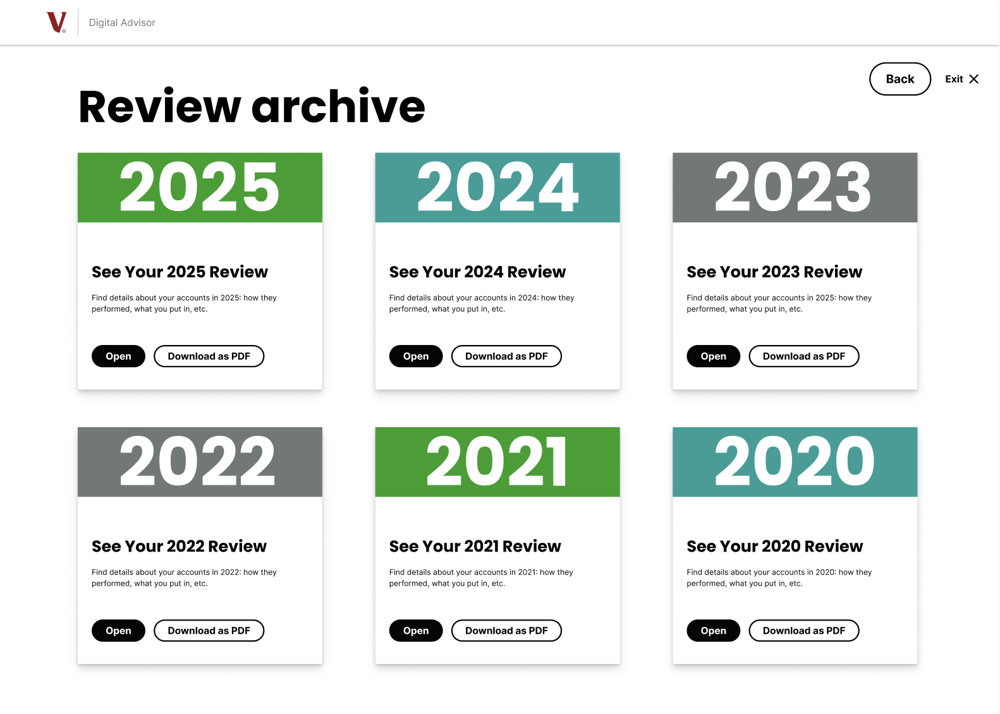
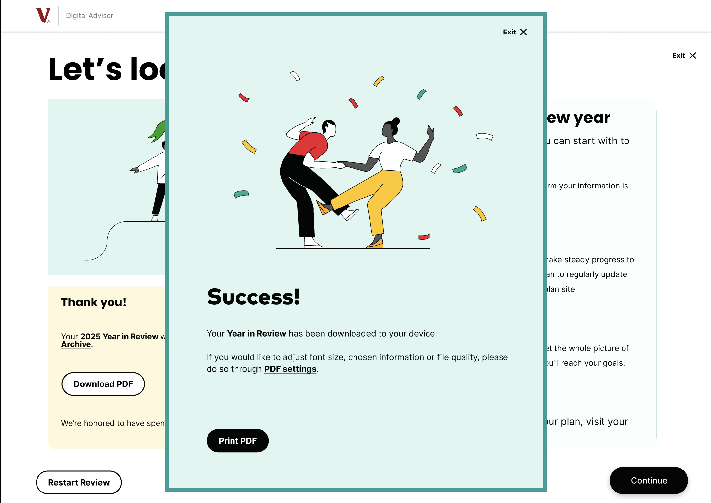
Why it works — feature summary
06 / My Role
07 / Reflection
What I'd Improve
There were many insights we got from our initial research that I would have loved to implement as well. For example, a smaller detail we noticed from the research was that some users didn’t like the style of the graphics or the number of pages in the YIR. I think it would be interesting to explore different style choices or reduce some of the existing screens to adress smaller insights like this.
What Surprised Me
I was really surprised how different types of users interact with products. When I initially went through the Vanguard site, there were some problematic points I noticed that I expected us to fix but when we gathered our insights I was surprised to find how frustrated users got over small details I ignored. In regards to the process of creating the redesign, I was surprised by the challenges of working on a project like this with a team. While, I think the end product ended up much better because of our collaboration, I was surprised to see the different approaches to design and brainstorming my teammates had and it was a learning process to combine our vision into one.
What I Learned and How This Shaped My Thinking
I learned how crucial UX research is to the process of UX design. When I first started this class I thought UX design mostly included creating Figma designs and making things look more aesthetically pleasing and structured. However, through this project I was able to build on my empathy driven design skills and create designs that truly resonate with user needs. I learned how important it is to delve into each aspect of the UX process and how these small steps impact the a cohesive and effective final product. I also learned how doing user research is not just understanding who they are and their demographics but understanding how they think. This was a lesson I especially learned through building our user personas because they all ended up being based on how a user interacts with a financial site, like how often they checked their accounts or how they approached a financial decision.
A complete UX research and design pipeline — from moderated usability testing with five retirement-age participants to a high-fidelity Figma prototype — pitched directly to the Vanguard client team. Five features, one cohesive flow, and a behavioral design framework that serves every user type without splitting the experience.
Explore the Prototype